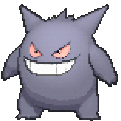

-
Bulbasaur #001

- Grama
- Veneno
Bulbasaur pode ser visto cochilando sob a luz do sol. Há uma semente em suas costas. Ao absorver os raios do sol, a semente cresce progressivamente.
-
Ivysaur #002

- Grama
- Veneno
Há um botão nas costas deste Pokémon. Para suportar seu peso, as pernas e o tronco de Ivysaur ficam grossos e fortes. Se ele começar a passar mais tempo deitado sob a luz do sol, é um sinal de que o botão florescerá em uma grande flor em breve.
-
Venusaur #003

- Grama
- Veneno
Há uma grande flor nas costas do Venusaur. Diz-se que a flor adquire cores vivas se receber bastante nutrição e luz solar. O aroma da flor acalma as emoções das pessoas.
-
Charmander #004

- Fogo
A chama que queima na ponta de sua cauda é uma indicação de suas emoções. A chama oscila quando Charmander está se divertindo. Se o Pokémon ficar furioso, a chama queima ferozmente.
-
Charmeleon #005

- Fogo
Charmeleon destrói impiedosamente seus inimigos usando suas garras afiadas. Se ele encontra um inimigo forte, ele se torna agressivo. Nesse estado excitado, a chama na ponta de sua cauda queima com uma cor branca azulada.
-
Charizard #006

- Fogo
Charizard voa pelo céu em busca de oponentes poderosos. Ele solta um fogo tão forte que derrete qualquer coisa. No entanto, ele nunca volta seu sopro de fogo contra qualquer oponente mais fraco do que ele.
-
Squirtle #007

- Água
O casco de Squirtle não é usado apenas para proteção. O formato arredondado do casco e os sulcos em sua superfície ajudam a minimizar a resistência na água, permitindo que este Pokémon nade em alta velocidade.
-
Wartortle #008

- Água
Sua cauda é grande e coberta por um pelo rico e grosso. A cauda torna-se cada vez mais escura à medida que Wartortle envelhece. Os arranhões em sua casca são evidências da resistência deste Pokémon como um lutador.
-
Blastoise #009

- Água
Blastoise tem bicos de água que se projetam de sua casca. Os bicos de água são muito precisos. Eles podem disparar balas de água com precisão suficiente para atingir latas vazias a uma distância de mais de 160 pés.
-
Caterpie #010

- Inseto
aterpie tem um apetite voraz. Ele pode devorar folhas maiores que seu corpo diante de seus olhos. De sua antena, este Pokémon libera um odor terrivelmente forte.
-
Mr Mime #011
- Psíquico
- Fada
Mr. Mime é um mestre em pantomima. Seus gestos e movimentos convencem os espectadores de que algo invisível realmente existe. Uma vez que os espectadores acreditam, aquilo que era invisível se torna palpável.
-
Ludicolo #012
- Água
- Grama
Ludicolo começa a dançar assim que escuta música animada de festa. Dizem que aparece quando escuta crianças cantando enquanto fazem trilha durante uma excursão.
-
Sealeo #013
- Água
- Gelo
Sealeo tem o hábito de sempre usar seu nariz para fazer malabarismos com tudo o que vê pela primeira vez. Ocasionalmente, entretém-se ao balançar e rolar um Spheal em seu nariz.
-
Gengar #014
- Fantasma
- Veneno
Às vezes, em uma noite escura, sua sombra projetada pela luz da rua irá dominar você de repente. É na verdade Gengar fingindo ser sua sombra.
-
Eevee #015
- Normal
A configuração genética instável de Eevee permite que mude de acordo com o ambiente em que vive. A radiação de várias pedras faz este Pokémon evoluir.